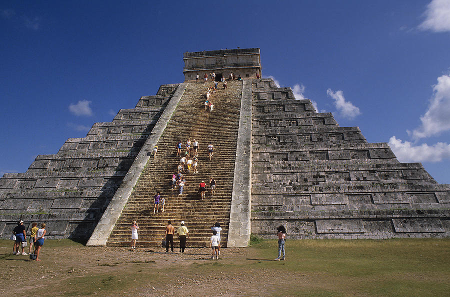
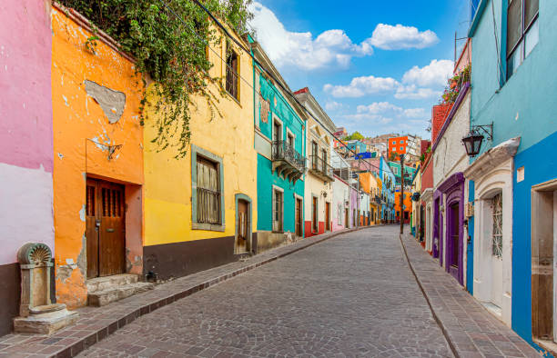

Travel
Prague

Geographical Location: Europe
Prague is the location of several University of Michigan Study Abroad programs. Many schools such as LSA, Ross, Engineering, and School of Information send students annually to Eastern Europe to explore an international education for their desired topic.
Prague is a country in central Europe. It is the capital of Czech Republic. It has a lot of historical features and buildings. It is a beautifg city with a ton of architecture. Prague is a very popular destination spot for tourists.
PHOTO GALLERY:


Zermatt, Switzerland

Geographical Location: Europe
Zermatt is a beautiful place, with 365 degree views of the mountains. It’s known for its famous mountain “the Matterhorn,” which is visible from nearly everywhere in the town. The town is vibrant, filled with patrons walking around, shopping for the most high quality snow boots, eating hot Rosti and drinking wine.
The skiing in Zermatt is unparalleled. Every day in the winter you can find people skiing all day. When it snows, the mountain becomes even more crowded, with skiers flocking to the mountain from around the country and the world.
PHOTO GALLERY:


Paris, France

Geographical Location: Europe
Paris is one of the oldest cities in Europe and the city of romance. With a vast amount of cultural
history,
lined with iconic landmarks, intimate scenes, and world-renowed art museums.
Paris welcomes millions of visitors annually, each drawn to its exquisite charm and beautiful ambiance.
Enjoy tasty treats and exquisite cuisine await, while city landmarks illuminate the night sky.
PHOTO GALLERY:


Mexico City

Geographical Location: North America
Mexico City is the capital of Mexico. The city is full of Museums that vary from history, art,
and even the history of the Mexican coin.
For tourists, there are places like an amusement park called Feria de Chapultepec and giant zoo Zoológico de Chapultepec that are a must visit. In the photo gallery there are also major attractions to visit.
PHOTO GALLERY:
-

-

-
- 
- 
Seoul

Geographical Location: East Asia
Seoul is the capital of South Korea and it is a city enshrined in history. The Han river runs through Seoul, dividing it into two parts. Additionally, there are many mountains in and around Seoul, making it so the city has a lot of hills.
Seoul is the perfect blend of modern and historical with five royal palaces and several shrines. Additionally, there are plenty of fun shopping areas in Seoul such as Hongdae, Insadong, and Gangam. Lastly, Seoul is a city of cafes with one on almost every block and several fun cafe experiences to try out, especially in Yeonnam.
PHOTO GALLERY:


Berlin

Geographical Location: Europe
Berlin, a city of fascinating contrasts, seamlessly blends a storied past with a cutting-edge present. The Brandenburg Gate, an iconic symbol, stands as a reminder of history, while sleek modern architecture shapes the skyline. The city's artistic spirit thrives, evident in vibrant street art, avant-garde galleries, and the East Side Gallery's striking murals on the Berlin Wall's remnants.
Berlin's neighborhoods each offer a distinct flavor. Kreuzberg brims with bohemian energy, Prenzlauer Berg exudes hipster charm, and Charlottenburg boasts elegance. As the sun sets, Berlin's renowned nightlife awakens. Legendary techno beats pulse through clubs like Berghain, offering an unforgettable nocturnal adventure.
PHOTO GALLERY:


New York City

Geographical Location: North America
New York City, otherwise known as “The Big Apple,” is a bustling city in the United States of America. Home to about eight million people, New York City houses popular attractions such as the Statue of Liberty, Central Park, the Empire State Building, and many more.
There are five burroughs within New York City, including Brooklyn, Manhattan, Staten Island, Queens, Bronx. Each borough is filled with different sights to see. New York City has many opportunities not only for those who live there, but also those visiting. From navigating the subway system to seeing a Broadway show, it is impossible to get bored.